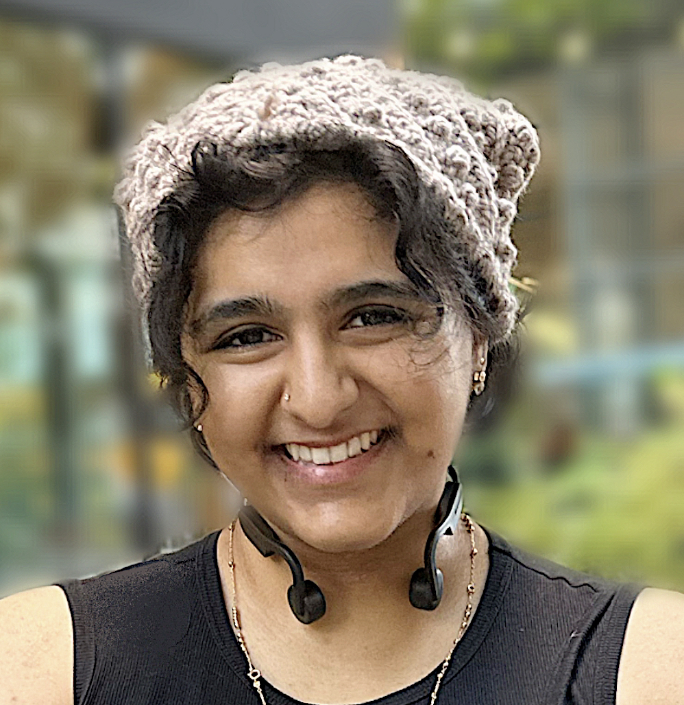
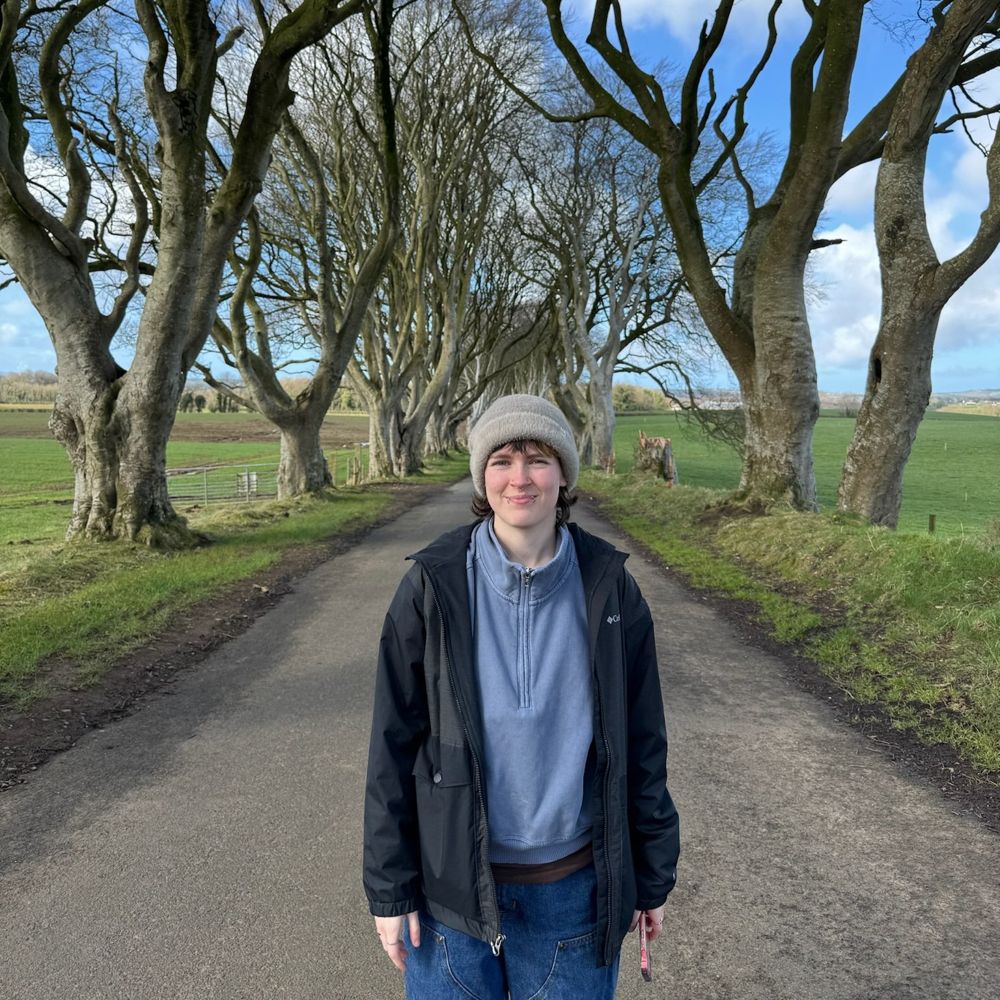
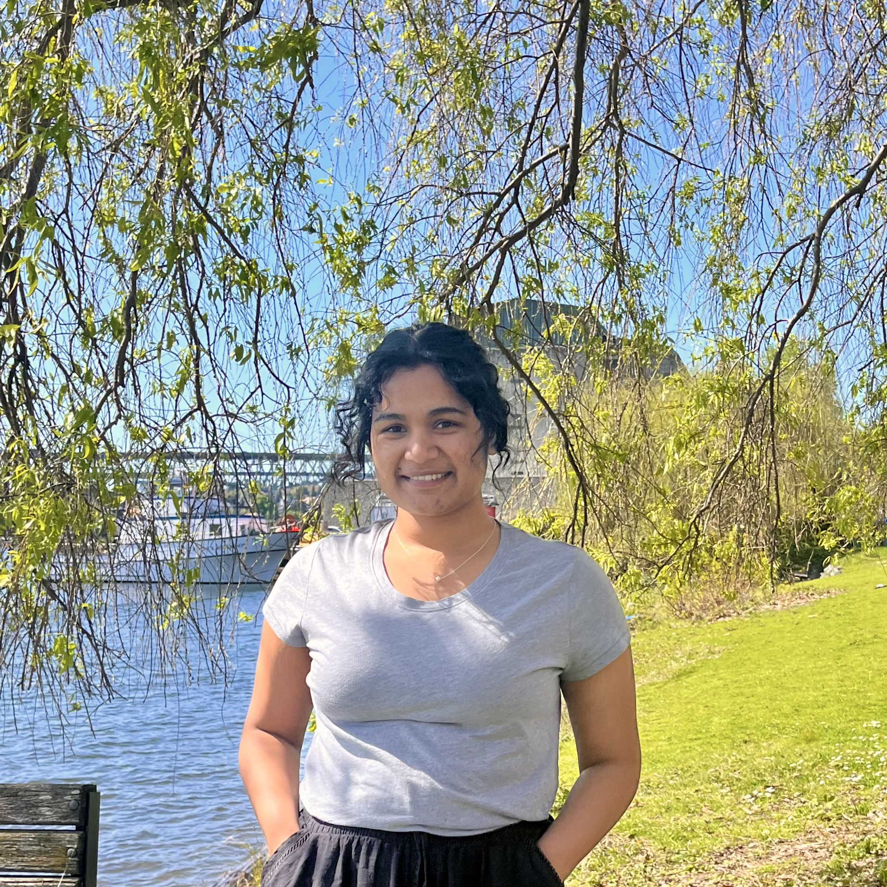
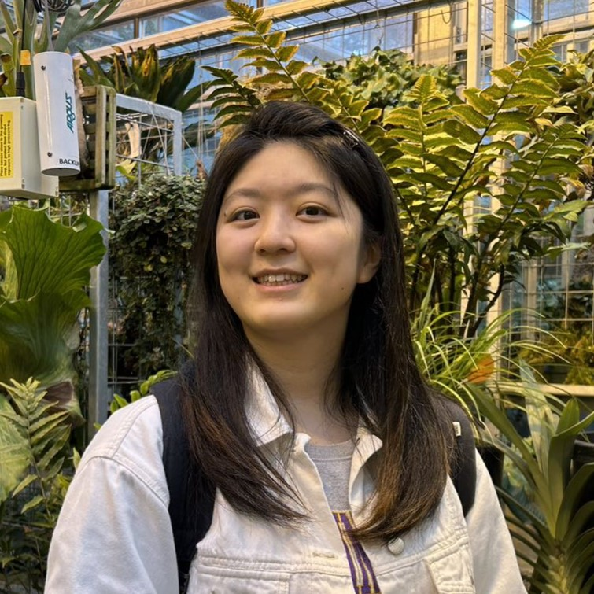
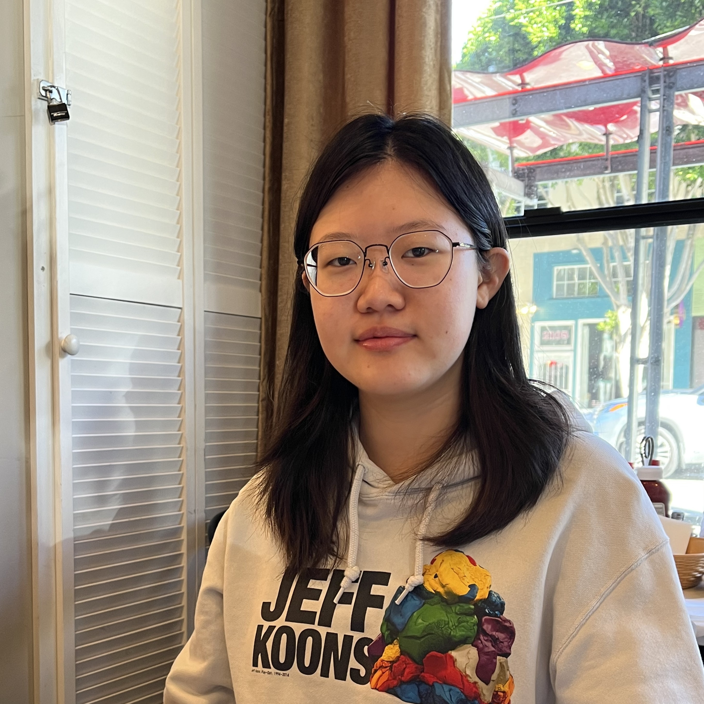
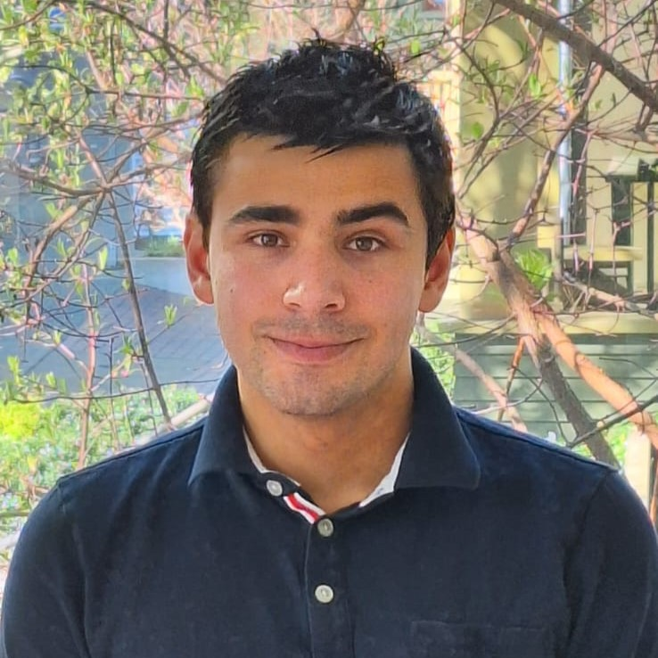
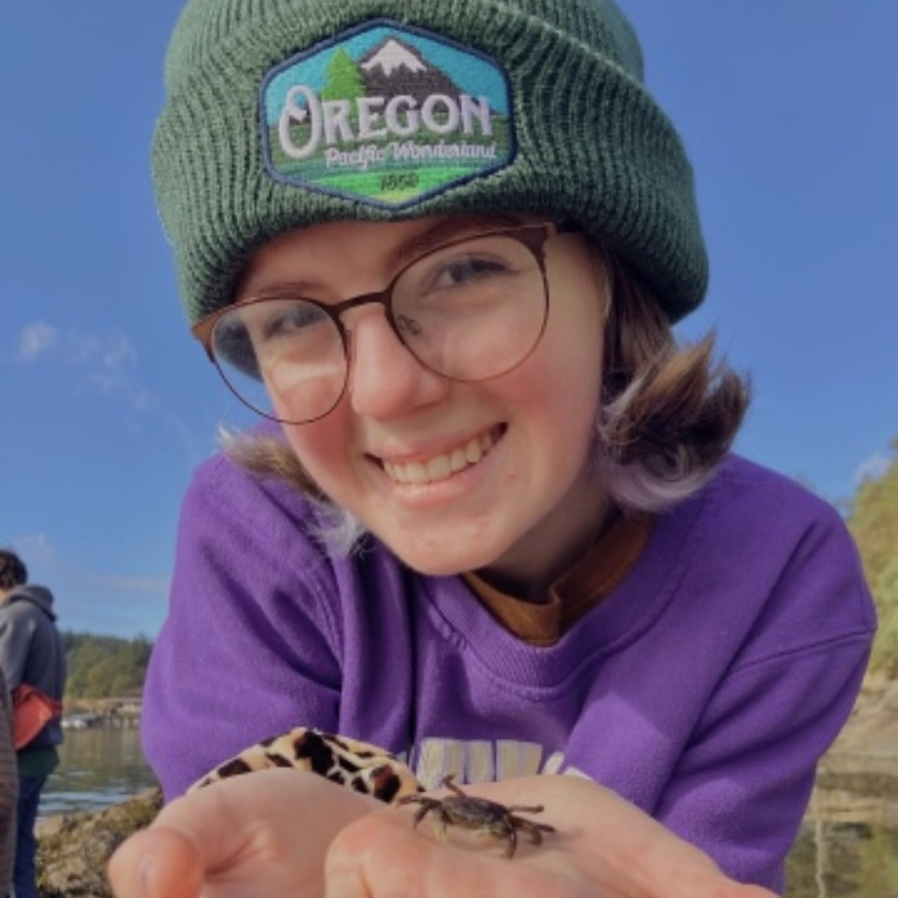

Who Are We?
Sophia Hashmey
Project Coordinator
Sophia Hashmey is an Economics Undergraduate Student at University of Washington Seattle earning her BA and minors in Data Science and ESRM. She plans on pursuing her PhD in environmental economics. With leading community development in her hometown for 6+ years and running her own small business, she has practiced knowledge in research, analysis, and leadership. She has a passion for sustainability initiatives and works to see that visions come to fruition.
Sheridan Stanner
Environmental Impact and Research Lead
Sheridan Stanner is a sophomore at the University of Washington pursuing a B.S. in Environmental Science and Terrestrial Resource Management. He works as an assistant in a lab studying soil and its carbon sequestering properties, and hopes to use this background to pursue a career in soil science. On the side, he is also passionate about ancient history and is working toward a minor in Classical Studies.
Koumudi Thanda
Implications and One Health Lead
Koumudi Thanda is senior at the University of Washington majoring in Honors Public Health - Global Health. Her research areas are adolescent health, mental health and analyzing the social determinants of health in marginalized communities. As a research assistant in various projects and an intern at WA DOH, she cultivated skills to understand what impacts the health of populations, ways to develop interventions and implement them as appropriate for the community. To continue her passion in public health, she is going to Johns Hopkins University in Fall 2024 to pursue a Masters of Science in Public Health concentrating in Global Disease Epidemiology & Control. Ultimately she aims to do a PhD in global public health and aid the efforts to prevent, protect and promote health of populations, holistically.
Fangzhou Xie
Technology and Statistics co-lead
Fangzhou Xie is
Yuanxi Li
Technology and Statistics co-lead
Yuanxi Li is a sophmore at the University of Washington majoring in Informatics and Sociology. Her interest area is cybersecurity, especially interested in how disinformation and misinformation spreads on social media and its impact. On the other hand, in the field of sociology, she focuses on homelessness and contributing to increasing housing availability.
Eytan Legros
Environmental Impact and Research
Eytan Legros is a sophmore at the University of Washington majoring in Marine Biology. Seeking to leverage his expertise in ecosystem management, wildlife protection, environmental research, and sustainability practices in a challenging role. Known for conducting field research, and for educating the public about environmental stewardship. Committed to fostering a deeper respect for our natural world and implementing strategies that lead to its preservation and recovery.
Annika McCarty
Environmental Impact and Research
Annika McCarty is an undergrad at the University of Washington pursuing a Bachelors in Biology: Ecology, Evolution, and Conservation and a minor in Marine Biology. She is currently working in a lab that studies aquatic invertebrates and aims to have a career in field conservation. Annika also has passions in the arts and is additionally working towards a minor in Swedish.
Meera Patel
Prototype Coordinator and Business Dev lead
Korena Mafune
Advisor
Korena Mafune is a postdoctoral fellow in the Winkler Lab at the University of Washington. Research focuses on tripartite interactions among plants, bacteria, and fungi and how these organisms can be utilized for sustainable agricultural practices. Advocate of promoting educational outreach and engagement to local communities. Background in soil microbiology, fungal ecology, restoration ecology, environmental horticulture, environmental sustainability, resource management, and quantitative analysis. UW husky 100 and National Geographic Explorer.